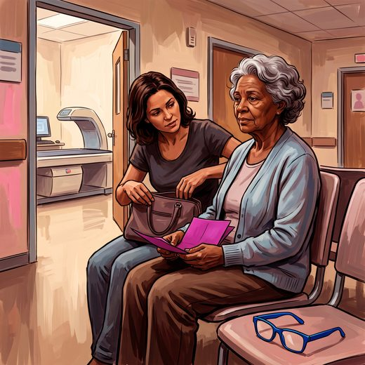

Consulta rápida à beira do leito
Condutas, doses e interações.
Referências da aula · 5
- US Preventive Services Task Force; Nicholson WK, Silverstein M, Wong JB, et al. Screening for osteoporosis to prevent fractures: US Preventive Services Task Force recommendation statement. JAMA. 2025;333(6):498-508. PMID 39808425.PubMed
- LeFevre ML; U.S. Preventive Services Task Force. Screening for thyroid dysfunction: U.S. Preventive Services Task Force recommendation statement. Ann Intern Med. 2015;162(9):641-50. PMID 25798805.PubMed
- Kidney Disease: Improving Global Outcomes (KDIGO) CKD Work Group. KDIGO 2024 Clinical Practice Guideline for the Evaluation and Management of Chronic Kidney Disease. Kidney Int. 2024;105(4S):S117-S314. PMID 38490803.PubMed
- 2023 American Geriatrics Society Beers Criteria® Update Expert Panel. American Geriatrics Society 2023 updated AGS Beers Criteria® for potentially inappropriate medication use in older adults. J Am Geriatr Soc. 2023;71(7):2052-81. PMID 37139824. doi:10.1111/jgs.18372.PubMedDOI
- Freitas EV, Py L, organizadores. Tratado de Geriatria e Gerontologia. 5ª ed. Rio de Janeiro: Guanabara Koogan; 2022.
Documentos oficiais
Leis e publicações do Ministério da Saúde sobre o cuidado da pessoa idosa, de acesso livre.
Abrir os documentos